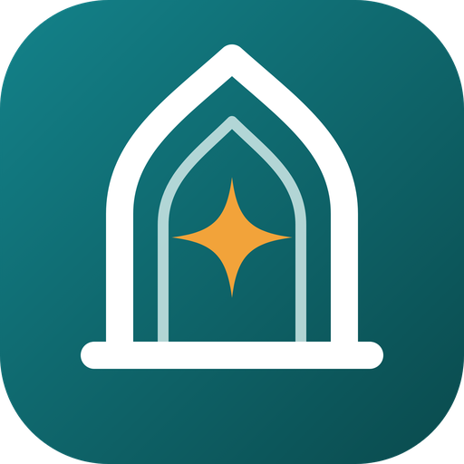

قريبًا
إيوان مهارة
ورش مجتمعية لكل المجتمعات: اكتشف الورش القريبة منك واحجزها، أو انشر ورشتك وأدِرها. على أندرويد وiOS والويب، بالعربية والإنجليزية.
تريد أن تعرف عند الإطلاق؟ راسلنا على eiwanstudio.dev@gmail.com.

ورش مجتمعية لكل المجتمعات: اكتشف الورش القريبة منك واحجزها، أو انشر ورشتك وأدِرها. على أندرويد وiOS والويب، بالعربية والإنجليزية.
تريد أن تعرف عند الإطلاق؟ راسلنا على eiwanstudio.dev@gmail.com.